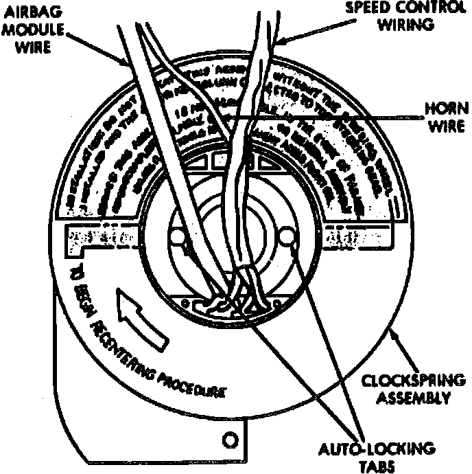

Clockspring Assembly / Spiral Cable: Adjustments
CLOCKSPRING CENTERINGIf the rotating tape within the clockspring is not positioned properly in relation to the steering wheel and the front wheels, the clockspring may fail during use. The clockspring must be centered if it is not known to be properly positioned, or if the front wheels were moved from the straight-ahead position with the clockspring removed during any service procedure.
WARNING: The airbag system is a sensitive, complex electromechanical unit. Before attempting to diagnose or service any airbag system or related steering wheel, steering column, or instrument panel components you must first disconnect and isolate the battery negative (ground) cable. Then wait two minutes for the system capacitor to discharge before further system service. This is the only sure way to disable the airbag system. failure to do this could result in accidental airbag deployment and possible personal injury.
1. Turn the steering wheel until the front wheels are in the straight-ahead position before starting the Centering procedure.
2. Disconnect and isolate the battery negative cable. If the airbag has not been deployed, wait two minutes for the system capacitor to discharge before further service.
3. Remove the airbag module.
4. If the vehicle is so equipped, unplug the wire harness connectors for the vehicle speed control switches and remote radio switches.
5. Remove the steering wheel with a steering wheel puller (Special Tool C-3428B).
Fig. 43 Auto-locking clockspring:

6. Depress the two plastic clockspring auto-locking tabs.
7. Keeping the locking mechanism disengaged, rotate the clockspring rotor clockwise to the end of its travel. Do not apply excessive torque.
8. From the end of the clockwise travel, rotate the rotor two and one-half turns counterclockwise. The horn wire harness should end up at the top, and the airbag wire harness at the bottom.
9. The front wheels should still be in the straight ahead position. Install the steering wheel being certain to fit the flats on the hub of the steering wheel onto the formations on the inside of the clockspring. Pull the wire harnesses from the clockspring through the upper and lower holes in the steering wheel hub. Tighten the steering wheel nut to 61 N.m (45 ft. lbs.). Be certain not to pinch any of the wiring between the steering wheel and the nut.
10. If the vehicle is so equipped. plug in the vehicle speed control switch and remote radio switch wire harness connectors.
11. Install the airbag module.